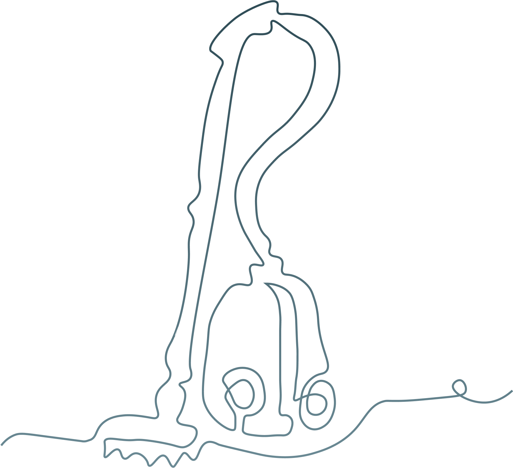

Equality is a very important topic. Equality is a human right. We are all entitled to live with dignity and with the freedom of self expression without fear. These rights should apply for people of all genders, sexual orientations, beliefs, ethnicities or any other individual in a minority.
It’s a known fact that women in general spend more time doing unpaid work such as taking care of children, laundry, cleaning and preparing meals. This creates inequalities.
Click here to see the final delivery for the Creative Conscience Awards ➔
I decided to join the Creative Conscience challenge. Creative Conscience is a creative community and global not-for-profit organisation who believe that creative thinking and innovation can make positive change. There were severals briefs. I chose to work with the brief that addressed the topic of equality. The challenge was to think of a way to change current behaviours and inspire people to understand the value brought by treating everyone equally. The brief challanged the participants to think of a way to actively change human behaviour and understanding.

Creative conscience is a yearly design competition for positive change.
I completed the brief in 3 weeks during a module in Hyper Island called Professional path, where students are expected to plan their own time and work independently. I wanted to spend my time creating something that had an impact and the possibility to make the world a better place. Therefore i joined the challenge and brief given by Creative Conscience, which is a yearly design competition that aims to generate solutions that helps the planet & society.
I dug deeper into the theme of equality to see what problems existed in this area. I mainly conducted desktop reserach in order to find insights on problems and needs when it came to equality. I quickly found insights that there seemed to exist large equality problems connected to household work. Some of the insights I found was that according to UN Women, women in general carry out at least 2,5 times more household work than men. This results in women having less time to engage in paid labor, or they work longer hours to combine paid and unpaid labor.
Below i summarize the two main insights I found and that I think shines a light on the main problems connected to equality, especially in the household.
Due to Covid lockdowns people are home more than ever. This means need for care and household work has multiplied. With data from 38 countries UN Women have concluded that both women and men had increased unpaid workload. However, women are still taking on a larger portion than men. More women than men are leaving the workforce, perhaps as a result of the increased unpaid workloads.
Almost everyone can recognize arguing with their partner about driving the kids to practice, doing the dishes or cleaning the house. You feel like you do it all the time, and you partner feels like he or she is the one taking the larger load. Money is the most common to fight about and chores comes in second place. 1 in 5 people know a couple who broke up over household chores studies have found.
When I had pin-pointed the problems realted to equality in the household, and decided that this was the area I wanted to focus on, I formulated a "How might we.." to spark ideas for a solution.
I ideated and came up with different solutions. From this point on I had started to get a clear view of what type of solution I wanted to create in order to solve or aid the problems and needs I previously had found. I considered only one idea to be good enough to move on with and develop a concept and prototype for.
In the end I choose to move forward with the idea of creating a concept for an application that would help users track their household work for a more equal every day life.
Addjust is the app that lets you add some just to the unpaid work in your relationship. By using Addjust you can easily track the household work that has been done and what chores need to be done next. All for a more equal everyday life!
Addjust lets you invite people to your household and add chores to your household list. Each chore gives different points if you complete it depending on its category. Of course, there is also a scoreboard to see who is in the lead.
The process of completing chores has been gamified and there are rewards, which you set yourself, to be had when you collected the points you set out to do.

The idea of the name came from merging the two words 'add' and 'just', and it is a play of words on the word 'adjust'.
A user flow was mapped out to ensure that the user would have a smooth journey throughout using the app.

A map of the user flow - Click the image for a high-resolution version of the user flow.
I initially sketched out wireframes on my Ipad, showcasing the core functions of the app. From these the high-fidelity prototype was created. Core functions were:

The frames were first drawn in Procreate and after that developed in Figma .
I created high-fi screens for all the steps in the user flow forming an interactive protype in Figma. Click here to see the video showing the full prototype and all functions.


The high-fi prototype was created in Figma.
In order for the user to track the amount of chores completed each person has access to several pages showing statistics of household work in several ways. The statistics make it easy to get an overview of the division of labor and are aimed at aiding when discussing and planning the household work in you relationship.

The app gathers startistic on household work in order for the user to have fact based discussions with their partner.
Below you can watch the final video that was delivered to Creative Conscience Awards 2021. The video walks thorugh the user jouney of the app and showcase the UX/UI mock-up. It summarizes the overall solution that I came up with for the brief.
I am happy to announce that the Addjust project was shortlisted in the 2021 Creative Conscience Awards.
I made some reflections while working on the brief for Creative Conscience Awards 2021. You can read my biggest takeaways from this project below.
I am fully capable of going through the process of solving a brief on my own. However, I do believe it is more fun to design and ideate together with others. During this project I missed exchanging ideas and having someone to bounce design decisions with.
During this project I realised how important it is for me to do something that I find to be meaningful and that is helping solve problems in the world. I want to be part of making positive change and working with those kind of cases gets me very motivated.